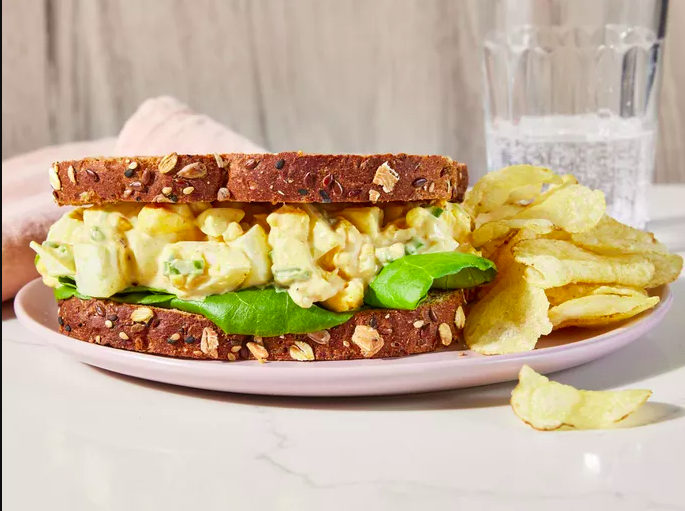

Home
Eggs Salad

Description
This egg salad recipe is the best and easy to make with chopped boiled eggs, mayonnaise, mustard, and green onions for some color and crunch. It tastes wonderful in a sandwich and will definitely be devoured at picnics! It's really good on rye.
Ingredients
- Eggs: Of course, this egg salad recipe starts with eggs!
- Condiments: You'll need mayonnaise and mustard.
- Green onion: Green onions lend a pop of flavor and color.
- Seasonings: This egg salad is simply seasoned with salt, pepper, and paprika.
Steps
- Boil, peel, and chop the eggs.
- Combine the chopped eggs and the remaining ingredients.
- Serve on bread or with crackers.